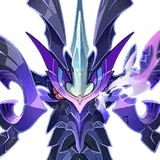

Chương V · Màn V
Bài Thơ Về Sự Tái Sinh Rực Rỡ
Nhiệm vụ Ma Thần — Natlan
Nhân vật xuất hiện
 Nhân vật chính · Nhà Lữ HànhLumineNhà Lữ Hành đến từ thế giới khác. Bị vị thần lạ mặt phong ấn và cướp mất người anh song sinh, cô bắt đầu hành trình đi tìm Bảy Vị Thần của Teyvat.
Nhân vật chính · Nhà Lữ HànhLumineNhà Lữ Hành đến từ thế giới khác. Bị vị thần lạ mặt phong ấn và cướp mất người anh song sinh, cô bắt đầu hành trình đi tìm Bảy Vị Thần của Teyvat. Bạn đồng hànhPaimonĐược Lumine cứu khỏi chết đuối hai tháng trước, Paimon tự nhận làm người dẫn đường cho cô. Hay ăn, hay nói, và rất ghét bị gọi là “thực phẩm dự trữ”.
Bạn đồng hànhPaimonĐược Lumine cứu khỏi chết đuối hai tháng trước, Paimon tự nhận làm người dẫn đường cho cô. Hay ăn, hay nói, và rất ghét bị gọi là “thực phẩm dự trữ”. Hỏa Thần Haborym của NatlanMavuikaSát cánh cùng Lumine tiến sâu vào Vương Quốc Dạ Thần tiêu diệt Chúa Tể Lửa Nguồn Ăn Mòn và khai mở kỷ nguyên mới.
Hỏa Thần Haborym của NatlanMavuikaSát cánh cùng Lumine tiến sâu vào Vương Quốc Dạ Thần tiêu diệt Chúa Tể Lửa Nguồn Ăn Mòn và khai mở kỷ nguyên mới.- C“Kỵ Sĩ Thiên Trụ” Thrain · Quan Chấp Hành thứ nhấtCapitanoDùng nghịch lý bất tử để gánh thay cái giá sinh mạng cho Mavuika trước mặt Ronova, hợp nhất với Dạ Thần trên Ngai Lửa Nguồn.
 Đại Shaman và Thợ rèn Tên CổCitlali · XilonenHoàn thành Tên Cổ Tumaini (Hy Vọng) cho Lumine và kiểm tra dòng Địa Mạch trước trận quyết chiến.
Đại Shaman và Thợ rèn Tên CổCitlali · XilonenHoàn thành Tên Cổ Tumaini (Hy Vọng) cho Lumine và kiểm tra dòng Địa Mạch trước trận quyết chiến. Sáu anh hùng và đồng đội sáu bộ tộcKachina · Mualani · Kinich · Ajaw · Chasca · Iansan · OroronCùng sáu tộc trưởng tiễn đưa và tiếp sức cổ vũ cho Lumine và Mavuika xuyên suốt cuộc chiến.
Sáu anh hùng và đồng đội sáu bộ tộcKachina · Mualani · Kinich · Ajaw · Chasca · Iansan · OroronCùng sáu tộc trưởng tiễn đưa và tiếp sức cổ vũ cho Lumine và Mavuika xuyên suốt cuộc chiến.- YDạ Thần · Chủ Nhân Vương Quốc Dạ ThầnYohualtecuhtinĐánh thức Nguyên Tố Hỏa cho Lumine và hợp nhất cùng Capitano để duy trì vĩnh viễn Địa Mạch Natlan.
- RChấp Chính Của Cái Chết · Cái Bóng của Thiên LýRonovaHiện thân trên bầu trời Ochkanatlan đòi cái giá tử vong trước khi buộc phải bảo toàn lời nguyền bất tử cho Thrain.

Chúa Tể Lửa Nguồn Ăn MònGosoythothSử dụng giọng nói của các Hỏa Thần tiền nhiệm công kích tinh thần trước khi bị Lumine và Mavuika thanh tẩy hoàn toàn.- NCác linh hồn, cố nhân và Saurian đồng hànhNhóc Con · Ayo · Hine · Atea · Vichama · Mallko · Chuychu · GuthredHội tụ cổ vũ và hộ tống hai chiến binh đi qua vùng đất bóng tối tới thắng lợi cuối cùng.
Các phần
- Phần 1Tàn Cảnh Dưới Đất
- Phần 2Giống Như Mặt Trời Mọc Rồi Lặn
- Phần 3Cuộc Chinh Phạt Của Ngôi Sao Và Lửa Đỏ
- Phần 4Đích Đến Của Mọi Kỳ Vọng
- Phần 5Khi Mọi Thứ Được Khắc Thành Bia Đá
Toàn bộ lời thoại được lấy từ bản tiếng Việt chính thức của trò chơi. Ở những đoạn người chơi được chọn câu trả lời, truyện chọn một lựa chọn duy nhất.